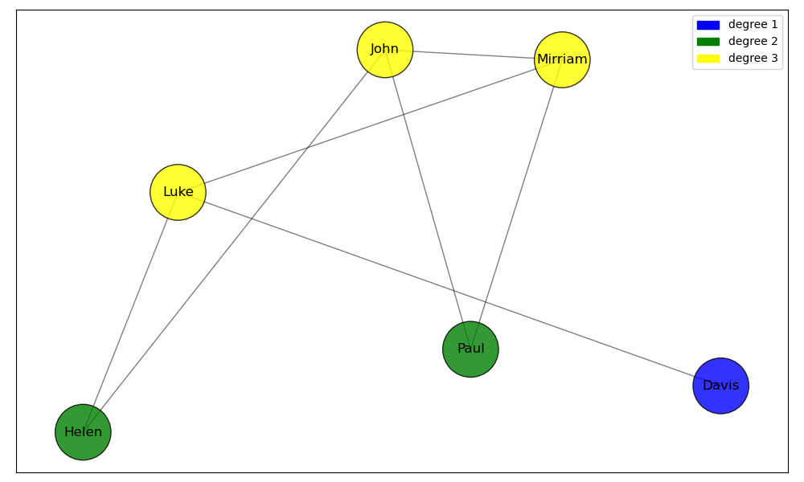
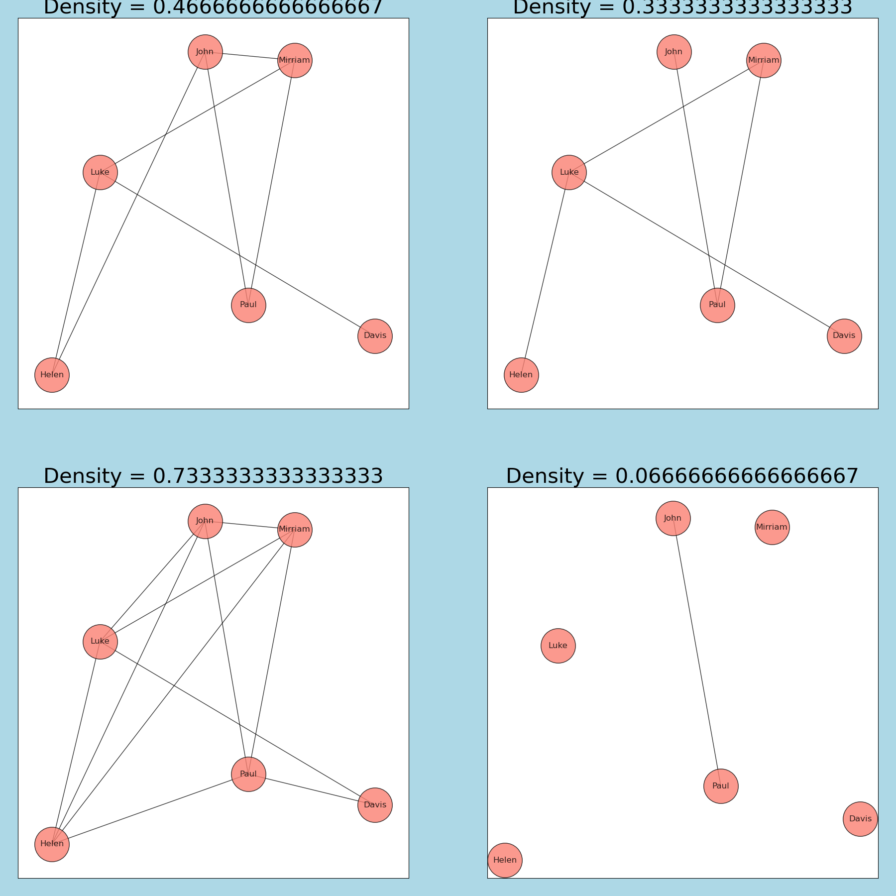
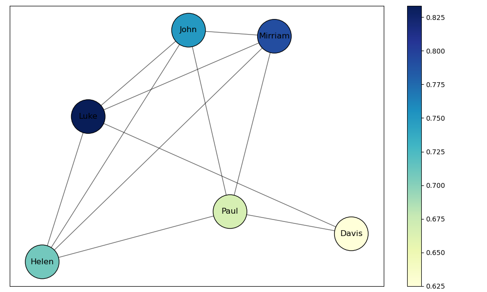

import matplotlib.pyplot as plt #allows us to call the matplotlib.pyplot library as 'plt'
import matplotlib.patches as mpatches #imports mpatches matplotlib subpackage
import networkx as nx #allows us to call the networkx library as 'nx'
import pandas as pd #allows us to call the pandas library as 'pd'
import numpy as np
import geopandas as gpd
import contextily as ctx
from mpl_toolkits.axes_grid1.inset_locator import inset_axes
import community as community_louvain
import randomSOCI 415 Network Analysis
Python
network analysis
This notebook is an introduction to basic network analysis in Python.
This notebook introduces key concepts in network analysis pertaining to sociology and provides a hands-on tutorial to using the NetworkX Python library.
1. What is Network analysis?
Network Analysis is a set of techniques used to study the structure and dynamics of networks. Networks are collections of objects/locations/entities (called nodes) connected by relationships (called edges). Network analysis has applications in many fields, including sociology, biology, economics, computer science, and more.
Network science in Sociology Network analysis in sociology is the systematic study of social structure through the mapping and measurement of relationships among individuals, groups, or organizations. It is not a discipline on its own, but rather a methodological and theoretical approach within sociology that helps conceptualize, describe, and model society as interconnected sets of actors linked by specific relationships. Network analysis in sociology is a core tool for understanding how relationships and social structures impact individuals and groups,
1.1 Key terms

Node: A node is a representation of an individual entity or actor in a network. In different contexts, nodes can be people, organizations, cities, or any other unit of analysis.
Edge: An edge represents the relationship or connection between two nodes. Edges can be directed (having a specific direction from one node to another) or undirected (no direction, implying a mutual relationship).

Degree: The degree of a node is the number of edges connected to it. In directed networks, this can be further divided into in-degree (number of incoming edges) and out-degree (number of outgoing edges).

The network above is an example of a Undirected graph, a graph with no direction. This means that if there is a connection between node A and node B, it is bidirectional - A is connected to B, and B is connected to A.
The example to the left is a directed graph: the edges between nodes have a specific direction. This means that if there is an edge from node A to node B, it does not imply there is an edge from B to A unless explicitly stated.

Density: Density is a measure that indicates how closely connected the nodes in a network are. Specifically, it refers to the ratio of the number of actual edges in the network to the maximum possible number of edges between nodes.

Centrality: Centrality measures the importance, influence, or prominence of nodes (entities) within a network. The centrality of a node tells us how “important” a node is to the aggregate network. There are many different kinds of centrality, but the four most well-known ones are degree, betweenness, closeness, and eigenvector centrality.
1.2 NetworkX
NetworkX is a Python library that is used for the creation, manipulation, and visualization of complex networks. It provides tools to work with both undirected and directed networks, perform network-related calculations, and visualize the results.
A library in Python is a collection of code that makes everyday tasks more efficient. In this case working with networks becomes much simpler when using NetworkX.
If you want to read the NetworkX documentation you can follow the NetworkX documentation link. This link shows what kind of commands exist within the NetworkX library.
1.2.1 Importing NetworkX
We can import NetworkX using the import command. At the same time, we’ll also import the matplotlib.pyplot library, for plotting graphs. Additionally, we’ll import pandas for basic data wrangling, and numpy for math. The as command allows us to use networkx commands without needing to type out networkx each time. Along with some other libraries.
1.2.2 Creating simple networks using NetworkX
We’ll start by creating a simple graph:
Below in the code we choose our nodes and edges between them.
G = nx.Graph() #creates an empty network graph
nodes = (1, 2, 3, 4, 5, 6) #our nodes, labeled 1,2,3,4,5,6.
edges = [(1, 2), (2, 3), (3, 1), (1,5), (3,5), (4, 5), (4, 6), (6, 1), (6, 3), (6,4), (4, 3), (5, 5), (3, 5)]
#the connections between our nodes are stored in an array, containing pairs of numbers called tuples.
G.add_edges_from(edges) #the `add_edges_from()` command adds edges to the network
G.add_nodes_from(nodes) #the `add_nodes_from()` command adds nodes to the network
nx.draw(G, with_labels = True) #renders the graph in the notebook
#the `with_labels = True` argument specifies that we want labels on the nodes.Let’s create a directed graph using nx.DiGraph(). We’ll also set our node positions using a seed: this will ensure that each time the nodes are rendered they hold the same position on the graph. You can set the seed to any number.
G = nx.DiGraph() #creates an empty directed graph object
nodes = (1, 2, 3, 4, 5, 6) #our nodes
edges = [(1, 2), (2, 3), (3, 1), (1,5), (3,5), (4, 5), (4, 6), (6, 1), (6, 3), (6,4), (4, 3), (5, 5), (3, 5)] #our tuples stored in an array which represent our nodes
G.add_edges_from(edges) #connects edges to nodes
G.add_nodes_from(nodes) #connects edges to nodes
position = nx.spring_layout(G, seed=100)
#nx.draw plots our network
nx.draw(G, pos = position, with_labels = True) # `pos` argument assigns a position to each node1.3 Creating Random Graphs
Instead of creating a graph with predetermined positions of nodes and edges we can also generate a random graph with a set amount of nodes and edges. Below you can change the amount of nodes and edges by changing n and d which correspond to the number of nodes and the degree (number of edges) that each node has. Creating a random graph could be more helpful for testing or when you want to try something and don’t wish to spend time plotting a real network and determining paths for all edges and nodes.
The command we will use is the nx.random_regular_graph command. Which generates a random regular graph.
# Set a seed for reproducibility so that everytime the code runs we get the same random graph
random.seed(42)
# Parameters
n = 20 # number of nodes
d = 3 # degree of each node
# Generate the random regular graph
rr_graph = nx.random_regular_graph(d, n)
# Visualize the graph, you can change the size, color, font and node size.
plt.figure(figsize=(8, 6))
nx.draw(rr_graph, with_labels=True, node_color='lightgreen', node_size=500, font_size=10, font_weight='bold')
plt.title("Random Regular Graph")
plt.show()
# Print some basic information about the graph
print(f"Number of nodes: {rr_graph.number_of_nodes()}")
print(f"Number of edges: {rr_graph.number_of_edges()}")
print(f"Degree of each node: {d}")2. Degrees, Density and Weights
2.1 Degrees
The degree of a node is the number of edges that are connected to a node.
We can see the degree of each node by running dict(G.degree()). This create a dictionary of key-value pairs for our network, where each key is the name of the node and the value is it’s respective degree.
degrees = dict(G.degree())If we want to see the degree of node \(n\), we can do so by running print(degrees[n]). For instance:
print(degrees[1])Let’s color the nodes of our graph based on their degree. We’ll create a function called get_node_colors which takes in the degree dictionary of each node and returns a color. We’ll then create a for-loop that iterates over each nodes in the list of nodes, gets the color of each node using the get_node_colors function we defined earlier, and appends it to an empty list called color_map.
degrees = dict(G.degree())
nodes = list(G.nodes())
def get_node_colors(degree):
if degree in [1, 2]:
return 'blue'
elif degree in [3, 4]:
return 'green'
elif degree in [5, 6]:
return 'yellow'
else:
return 'red'
color_map = [] #`color_map` is an empty list
for node in nodes:
color = get_node_colors(degrees[node]) # get color of current node using node_colors according to degree of node
color_map.append(color) # appends color of each node to color_map for each node in nodes
print(degrees)
print(nodes)
print(color_map)The \(n\)-th entry in color_map corresponds to the \(n\)-th node in nodes. For instance, color_map[0] returns the color of the first node (1).
color_map[0]We can now color the nodes of our graph, using the color map we defined above. The node_color argument takes in an array or list of colors that it uses to color each node.
G = nx.DiGraph() # creates an empty directed graph object
nodes = (1, 2, 3, 4, 5, 6)
edges = [(1, 2), (2, 3), (3, 1), (1,5), (3,5), (4, 5), (4, 6), (6, 1), (6, 3), (6,4), (4, 3), (5, 5), (3, 5)]
G.add_edges_from(edges)
G.add_nodes_from(nodes)
position = nx.spring_layout(G, seed=100)
nx.draw(G, pos = position, node_color=color_map, with_labels=True)
# node_color argument colors the nodes based on a given list or array of colors,
# with the first color corresponding to the first node, second to the second node, etc.Let’s also add a legend to our graph, which gives information about the meaning of each color. We’ll do this using the mpatches subpackage we imported earlier.
blue_patch = mpatches.Patch(color='blue', label='1-2 edges')
green_patch = mpatches.Patch(color='green', label='3-4 edges')
yellow_patch = mpatches.Patch(color='yellow', label='5-6 edges')
plt.legend(handles=[blue_patch, green_patch, yellow_patch]) #adds legend to the plot
nx.draw(G, pos = position, node_color=color_map, with_labels=True)2.2 Density
Density refers to the proportion of actual edges in a network compared to the total possible connections. It indicates how interconnected the nodes in a network are, with a higher density suggesting a more connected network. Density is defined from [0,1], meaning a network with a density of 0.95 is very interconncected. Note that self-loops (edges from and to the same node) are counted in the total number of edges but not in the maximum number of edges so graphs can have a density greater than 1.
We can calculate the density of our graph:
nx.density(G)2.3 Weights
Often times, you may end up working with weighted graphs: for instance, these weights could correspond to popularity of roads in road networks, or the size of pipes in a sewage network.
We’ll standardize our weights to be between 1 and 2 (as otherwise the results are messy). We’ll do this using a for-loop, like we did with the degrees.
G_weights = nx.DiGraph() #creating a new graph object called G_weights
nodes = [1, 2, 3, 4, 5, 6]
edges = [(1, 2), (2, 3), (3, 1), (1,5), (3,5), (4, 5), (4, 6), (6, 1), (6, 3), (6,4), (4, 3), (5, 5), (3, 5)]
weights = [100, 50, 75, 50, 60, 100, 100, 75, 40, 50, 50, 100, 100] #add list of weights
G_weights.add_edges_from(edges)
G_weights.add_nodes_from(nodes)
adjusted_weights = []
for weight in weights:
adjusted_weight = 1+ (max(weights)-weight)/(max(weights)-min(weights)) #standardizes weights to be between 1 and 2
adjusted_weights.append(adjusted_weight)
position = nx.spring_layout(G, seed=100)
print(adjusted_weights)
nx.draw(G_weights, pos = position, width = adjusted_weights, with_labels = True)
# width argument take in a list or array of numbers corresponding to weightsThis is great, but the results aren’t very clear. Let’s add a color gradient to the edges to represent different weights.
norm = plt.Normalize(min(weights), max(weights), clip=False)
#`plot.normalizes` normalizes the weights such that they are evenly distributed across the gradient spectrum
edge_colors = plt.cm.Greys(norm(weights))
# norm(weights) normalizes the weights
# plot.cm.greys() assigns the weights to color values
# edge_colors is a multidimensional array of RGBA color values corresponding to each edge
fig, ax = plt.subplots() #explicitly specifying figure and axes in order to create a color bar
nx.draw(G_weights, pos=position, edge_color=edge_colors, width=adjusted_weights, with_labels=True, ax=ax)
#ax = ax argument needed for color bar
# Adding color bar
sm = plt.cm.ScalarMappable(cmap="Greys", norm=norm) # creates a scalarmappable object which acts
# as a bridge between the numerical weight values and color map
plt.colorbar(sm, ax=ax) #plotting color bar3. Adjacency matrices
An Adjacency matrix is a method of representing graphs in matrix form. In an adjacency matrix, the rows and columns correspond to the vertices (or nodes) of the graph. The entries of the matrix indicate whether pairs of vertices are adjacent or not in the graph. Normally, a value of 1 is assigned to entries where an edge is present, and 0 is assigned to entries where an edge is not. For a weighed graph, the weight of the edge is represented as a numerical value for entries where an edge is present.
We can convert our simple graph to an adjacency matrix:
nx.to_pandas_adjacency(G)If we want to use our weighted graph, we can use the following code:
# len(edges) returns the total number of entries in the list of edges.
# range(len(edges)): This generates a sequence of numbers from 0 to n-1 where n is len(edges),
#so the for-loop will run n times with i taking each value in that range, one at a time.
for i in range(len(edges)):
edge = edges[i] # retrieves the edge at position i in the list of edges
weight = weights[i] # retrieves the weight at position i in the list of weights
G_weights.add_edge(edge[0], edge[1], weight=weight) # adds an edge with a weight to the graph
nx.to_pandas_adjacency(G_weights, nodelist=nodes, weight='weight') #converts to pandas adjacency matrix with the weights in placeWe can visualize our matrix using the code below. Note that instead of using nx.to_pandas_adjacency we use nx.to_numpy_array: this allows us to store the matrix in the form of an array.
adj_matrix = nx.to_numpy_array(G_weights, nodelist=nodes, weight='weight')
plt.figure(figsize=(8, 8)) #displays data as an image on a 2d raster; in our case, a numpy array
plt.imshow(adj_matrix, cmap='gray_r')
for i in range(adj_matrix.shape[0]): #loops through each row of the matrix
for j in range(adj_matrix.shape[1]): #for each row, loops through each column of the matrix
plt.text(j, i, int(adj_matrix[i, j]),
ha='center', va='center', color='red', size=30) #prints the value at that position in the matrix on the graph
plt.title('Adjacency Matrix Visualization')
plt.xlabel('Node Index')
plt.ylabel('Node Index')4.0 Measures of Centrality
Centrality is defined as the set of metrics used to determine the importance or influence of a particular node within a network. It helps to identify which nodes hold strategic significance in terms of connectivity, information flow, or influence over other nodes. Various centrality metrics, such as degree, betweenness, and eigenvector centrality, provide different perspectives on the role each node plays within the network’s overall structure.
4.1 Network Distance and Eccentricity
Before talking about centrality, we first need to talk a bit about distance. Distance, also known as Geodesic distance, is defined as the number of edges traversed by the shortest path between two nodes.
- The distance between a node and itself is 0.
- The distance between a node and a node for which no shortest path exists (such as a node that is disconnected from other nodes) is \(\infty\).
- The distance between a node and it’s neighbor is 1.
A node’s eccentricity is the maximum distance from said node to all other nodes in the graph. For instance, in the following network, the eccentricity of node \(A\) is 2, but the eccentricity of node \(B\) is 1.
nodes = ("A","B", "C")
edges = [("A","B"), ("B", "C")]
G_example = nx.Graph()
G_example.add_edges_from(edges)
G_example.add_nodes_from(nodes)
color_map = ["salmon", "lightblue", "salmon"]
red_patch = mpatches.Patch(color='salmon', label='eccentricity = 1')
blue_patch = mpatches.Patch(color='lightblue', label='eccentricity = 2')
plt.legend(handles=[blue_patch, red_patch])
nx.draw(G_example, node_color=color_map, with_labels=True)If we color the nodes of our random graph by eccentricity, we can see:
#Create random graph
random.seed(415) #Course code
n = 20
d = 3
rr_graph = nx.random_regular_graph(d, n)
# Compute eccentricity
ecc = nx.eccentricity(rr_graph)
unique_ecc = sorted(set(ecc.values()))
# Choose a color for each unique eccentricity using matplotlib
colors = plt.get_cmap('tab10', len(unique_ecc))
ecc_to_color = {e: colors(i) for i, e in enumerate(unique_ecc)}
color_map = [ecc_to_color[ecc[node]] for node in rr_graph.nodes()]
# Create a legend
patches = [mpatches.Patch(color=colors(i), label=f"eccentricity = {e}") for i, e in enumerate(unique_ecc)]
plt.figure(figsize=(8, 6))
nx.draw(rr_graph, node_color=color_map, with_labels=True, node_size=500, font_size=10, font_weight='bold')
plt.legend(handles=patches, bbox_to_anchor=(1, 1))
plt.title("Random Regular Graph with Eccentricity Coloring")
plt.tight_layout()
plt.show()
# Print summary
print(f"Number of nodes: {rr_graph.number_of_nodes()}")
print(f"Number of edges: {rr_graph.number_of_edges()}")
print(f"Eccentricity distribution: {ecc}")We can see that the nodes in the furthest corners have an eccentricity of 6 and more central nodes have a lower eccentricity.
4.2 Degree Centrality
Degree centrality is simple: Recall that the degree of a node is the number of nodes directly connected to it. In degree centrality, the more adjacent nodes, the more important the network is considered to be. Degree centrality is used primarily in social networks, where nodes with higher degrees are commonly major channels of information. A high degree means a node has many direct ties with other nodes, and has better access to resources within the network.
Note that the NetworkX nx.degree_centrality() function normalizes each node’s degree by dividing by the maximum possible degree in the network. Therefore for graphs without self-loops the degree centrality is always \(\leq 1\). For educational purposes, we un-normalize the degree values, but this is not common practice.
We can not use the same random graph technique as each node will have a degree equal to 3, instead we will use the first graph from this notebook.
We can calculate the degree centrality of all our nodes in our network:
# Define the graph
nodes = (1, 2, 3, 4, 5, 6)
edges = [
(1, 2), (2, 3), (3, 1), (1, 5), (3, 5),
(4, 5), (4, 6), (6, 1), (6, 3), (6, 4),
(4, 3), (5, 5), (3, 5)
]
G = nx.Graph()
G.add_edges_from(edges)
G.add_nodes_from(nodes)
# Get degree for each node
degree_dict = dict(G.degree())
degrees = list(degree_dict.values())
unique_degrees = sorted(set(degrees))
# Assign a unique color per degree
colors = plt.get_cmap('viridis', len(unique_degrees))
degree_to_color = {deg: colors(i) for i, deg in enumerate(unique_degrees)}
color_map = [degree_to_color[degree_dict[n]] for n in G.nodes()]
# Create legend for each degree
patches = [mpatches.Patch(color=colors(i), label=f"degree = {deg}") for i, deg in enumerate(unique_degrees)]
plt.figure(figsize=(6, 4))
nx.draw(G, with_labels=True, node_color=color_map, node_size=800, edge_color='gray', font_weight='bold')
plt.legend(handles=patches, bbox_to_anchor=(1, 1))
plt.title("Degree Centrality Graph")
plt.tight_layout()
plt.show()4.3 Closeness Centrality
Closeness centrality is a measure of how close a node is to all other nodes in the network. It can be computed as the “sum of the geodesic distances of a node to all other nodes in the network”. A node is important if it is close to all other nodes in the network. One flaw of closeness centrality is that while it is a useful indicator of node importance in small networks, it produces little variation in large networks with many edges.
# Define the graph
nodes = (1, 2, 3, 4, 5, 6)
edges = [(1, 2), (2, 3), (3, 1), (1, 5), (3, 5),(4, 5), (4, 6), (6, 1), (6, 3), (6, 4),(4, 3), (5, 5), (3, 5)]
G = nx.Graph()
G.add_edges_from(edges)
G.add_nodes_from(nodes)
# Calculate closeness centrality
centrality = nx.closeness_centrality(G)
# Normalize centrality values for color mapping (so 0 = min, 1 = max)
centralities = np.array(list(centrality.values()))
norm_centrality = (centralities - centralities.min()) / (centralities.max() - centralities.min() + 1e-9)
# Map normalized centrality to colormap
cmap = plt.cm.plasma
color_map = [cmap(val) for val in norm_centrality]
plt.figure(figsize=(6, 4))
nx.draw(G, with_labels=True, node_color=color_map, node_size=800, edge_color='gray', font_weight='bold')
plt.title("Graph Colored by Closeness Centrality")
plt.tight_layout()
plt.show()
# Print node centrality table
print("Node\tCloseness Centrality")
for node in G.nodes():
print(f"{node}\t{centrality[node]:.4f}")4.4 Betweenness Centrality
Betweenness Centrality is a measure of the importance of a node based on how well it serves as a bridge between nodes in a network. The mathematical representation of the betweeness centrality of a node is the number of times each node has to pass through that node to reach every other node in a network. Nodes with high betweenness thus serve as “bridges” within a network.
Consider the graph below:
#Define our network
G_betweenness_example = nx.Graph()
edges_list = [(0,1),(0,2),(0,3),(0,4),(1,2),(2,3),(3,4),(1,4),(2,4),(1,3),(4,5),(5,6)]
G_betweenness_example.add_edges_from(edges_list)
pos = nx.spring_layout(G_betweenness_example, seed=1000)
#Draw our graph
nx.draw(G_betweenness_example,pos=pos, with_labels=True, edgecolors="black", node_color="bisque", node_size=800)Node \(4\) serves as a bridge between nodes 5 and 6 to the rest of the nodes in the network. For a path to be drawn between nodes 6 or 5 to nodes 0,1,2,3, the path must go through node 4. Let’s calculate the betweenness centrality of this network, and label nodes by centrality:
#Define our network
G_betweenness_example = nx.Graph()
edges_list = [(0,1),(0,2),(0,3),(0,4),(1,2),(2,3),(3,4),(1,4),(2,4),(1,3),(4,5),(5,6)]
G_betweenness_example.add_edges_from(edges_list)
pos = nx.spring_layout(G_betweenness_example, seed=1000)
#Find the centrality values for our nodes
centrality = nx.betweenness_centrality(G_betweenness_example, normalized=False)
centrality_values = np.array(list(centrality.values()))
cmap="BuPu"
#Put labels on our network
labels = {}
for node in G_betweenness_example.nodes():
labels[node] = centrality_values[node]
#Draw our graph using `nx.draw`
nx.draw(G_betweenness_example,pos=pos, node_color=centrality_values, edgecolors="black", cmap=cmap, node_size=800)
nx.draw_networkx_labels(G_betweenness_example, pos, labels=labels, font_color="orangered")We can see that node 4 does indeed have the highest betweenness centrality. The values of 0 for nodes 0, 1, 2, 3 and 6 indicate that each node can reach every other node without passing through those nodes. The value of 5.0 for node 5 indicates that five nodes must pass through node 5 in order to reach another node.
4.5 Eigenvector centrality
Eigenvector centrality is a measure of the influence of a node in a network by considering not just how many connections it has (as we did with degree centrality), but also the importance of those connections: A node with high eigenvector centrality is connected to many nodes that themselves have high centrality, making it more influential in spreading information or resources. Unlike simpler measures like degree centrality, which only counts connections, eigenvector centrality looks at the overall structure of the network. It helps identify key players in a network who might not have the most connections but are well-connected to other important nodes.
# Create a larger network
G = nx.barabasi_albert_graph(n=20, m=2, seed=42) # 20 nodes and each connects to 2
# Calculate eigenvector centrality
centrality = nx.eigenvector_centrality(G)
# Normalize values for coloring
centrality_values = np.array(list(centrality.values()))
norm_centrality = (centrality_values - centrality_values.min()) / (centrality_values.max() - centrality_values.min() + 1e-9)
cmap = plt.cm.plasma
color_map = [cmap(val) for val in norm_centrality]
# Draw the graph
plt.figure(figsize=(8, 6))
pos = nx.spring_layout(G, seed=42)
nx.draw(G, pos=pos, with_labels=True, node_color=color_map,
node_size=800, font_weight='bold', edge_color='gray')
plt.title('Large Graph Colored by Eigenvector Centrality')
plt.tight_layout()
plt.show()
# Print node eigenvector centrality table
print("Node\tEigenvector Centrality")
for node in G.nodes():
print(f"{node}\t{centrality[node]:.4f}")